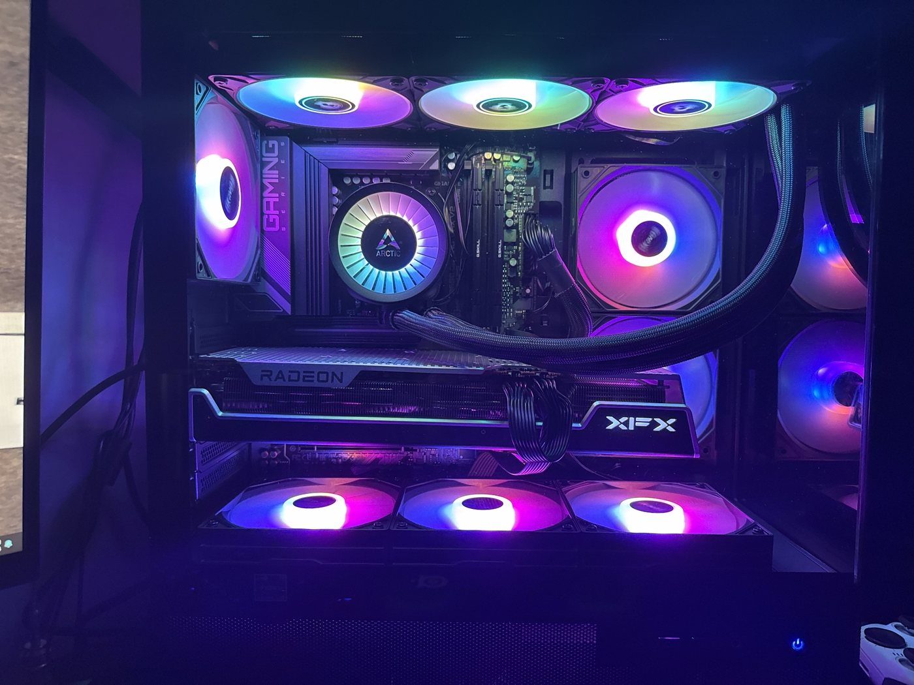

Discovery Project Feature · ECE 1100
Screen-Time Alert: a Raspberry Pi that tells me to stop gaming
A standalone hardware device that monitors how long a gaming session has been running on my desktop PC and delivers an escalating physical light signal once I pass the limit I set for myself. Built with a Raspberry Pi, Python, and an LED indicator circuit.
The Problem
I lose more time to video games than I intend to. Not catastrophically, but consistently: I sit down to play for an hour after classes and look up three hours later having not touched the problem set I told myself I would start at seven. The specific failure is not a lack of knowledge about how long I have been playing. It is that the information never reaches me in a form I cannot dismiss.
I had already tried the software answers. Screen-time trackers, app timers, and operating-system limits all share the same weakness: the alert appears on the same screen I am already absorbed in, in the same visual language as everything else on that screen, and it can be closed with a single click that costs me nothing. I got very good at closing them. A notification that competes with the game for attention inside the game's own medium is going to lose, because the game is engineered to hold attention and the notification is not.
So the design problem I set for myself was this: deliver the time signal outside the screen, in physical space, in a way that escalates and that I cannot dismiss without physically getting up. That reframing is the whole project. It moves the problem out of software and into hardware, which is also why it was worth building as an electrical engineering project rather than writing as a script.
The PC behind the problem
The computer this device monitors is one I built myself. I researched and chose every component, assembled it with no prior experience, and troubleshot it back to life when I thought everything was lost. The Screen-Time Alert is the second half of that story: I built a gaming PC, then had to build something to get me off it.

The Process
I had a Raspberry Pi already, so the architecture came together around it. The Pi sits on my desk next to my PC in my dorm room and runs independently of the machine I am gaming on, which matters: a device that is not running on the computer I am using cannot be closed from that computer.
The system breaks into three parts. First, detection: determining whether a game is currently running and for how long. Second, decision: comparing elapsed session time against the threshold I configured and deciding what stage of alert is appropriate. Third, output: driving a visible indicator from the Pi's GPIO pins through a current-limiting resistor to an LED, with the blink pattern getting more insistent the further past the limit I go.
The design decisions that took the most thought were not the code. They were the hardware and human-factors choices. How bright does the indicator need to be to register in peripheral vision without being so bright that I just cover it up? What blink frequency reads as urgent rather than ambient? Where does the device have to physically sit relative to the monitor? I also had to size the current-limiting resistor for the LED rather than guessing, which was the first time a calculation from class produced a component sitting on my desk.
I built it in stages so that each piece could be tested on its own: first getting the Pi to blink an LED on command, then getting the timer logic correct in isolation, then connecting the detection to the real PC, then tuning the escalation behavior against actual sessions.
assets/img/project-build.jpg and I will swap it in.
Good options: the Pi wired to the LED on your desk, a close-up of the
breadboard, or the alert lit up during a session.
The Outcome
The result is a device that changes the decision point. When the light starts, the information is in the room rather than on the screen, and ignoring it means deliberately choosing to sit next to a blinking light instead of absentmindedly clicking a dialog away. That difference in friction is the entire value of the build, and it is the part I could not have gotten from a software timer.
To finish before the Showcase
Fill in the real results here: how many days you ran it, whether your sessions actually got shorter, what broke, what you had to change after testing, and what you would do differently. Numbers are persuasive — even rough ones like "average session dropped from about three hours to about ninety minutes over two weeks." Also confirm this section plus the ones above clears the 400-word minimum once your real results replace this note.
Reflection: what this taught me
Three things carried over from this project into how I think about engineering. The first is that restating the problem is often worth more than improving the solution. Every software screen-time tool I tried was a better piece of software than anything I wrote, and all of them failed for me, because they answered the question "how do I count the time" instead of "how does the signal reach the person."
The second is that hardware carries authority that software does not. A physical object in a room asserts itself. That is a design property worth remembering, and it generalizes well beyond a desk lamp: it is the same reason control systems in industrial settings use physical indicators and alarms rather than relying on a dashboard somebody has to be looking at.
The third is more practical. This was my first project where I specified a component from a calculation, wired it, and watched it behave the way the math said it would. That loop — analysis to hardware to observed behavior — is the loop I want my career to run on, and it is a large part of why I am aiming at electric energy systems rather than a purely software path.